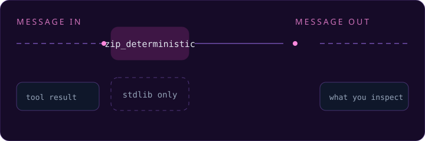

Install
consolepip install zip-deterministic
Use
pythonfrom zip_deterministic import zip_bytes, tar_bytes, write_zip, write_tar
data = zip_bytes(
{"README.md": b"# hello\n", "src/app.py": b"print('hi')\n"},
compression=__import__("zipfile").ZIP_DEFLATED,
level=6,
)
tar = tar_bytes({"README.md": b"# hello\n"}) # .tar.gz, gzip header cleared
plain = tar_bytes({"README.md": b"# hello\n"}, gz=False) # bare .tar
write_zip("release.zip", {"a.txt": b"a"}) # returns the size in bytes
write_tar("release.tar.gz", {"a.txt": b"a"})
Executables keep their bit when you ask for it:
pythonzip_bytes({"bin/run.sh": b"#!/bin/sh\n"}, mode=0o755)
Members are checked before anything is written. Absolute paths, .. traversal, duplicate names and non-bytes content raise instead of producing an archive that extracts outside the target directory.
What it does not do
- It does not walk a directory for you: pass the members, so the caller decides what
goes in and in what encoding.
- Symbols, hard links and directories are not modelled; only regular file members.
- Deflate output still depends on the zlib version. Same interpreter and zlib, same
bytes; across zlib versions the compressed stream may differ, which is why the reproducible-builds project recommends ZIP_STORED when that matters.
Development
consolepython -m venv .venv
.venv/bin/pip install -e ".[test]"
.venv/bin/pytest
The suite covers every line of the package (pytest --cov --cov-branch), and the examples in the docstrings run as tests through --doctest-modules.
License
MIT.